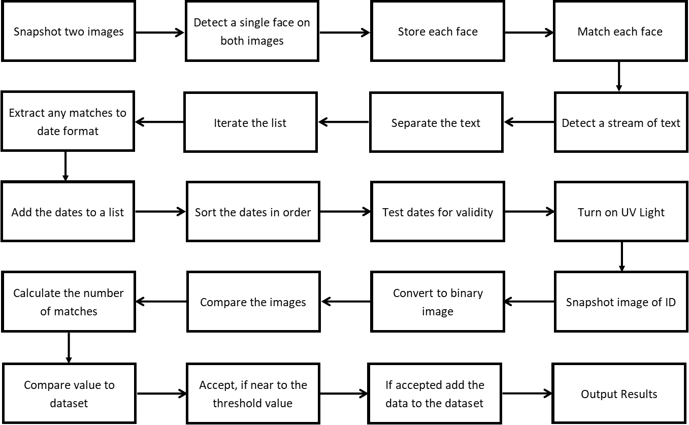
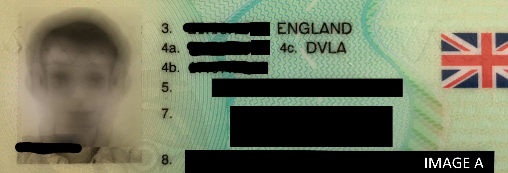
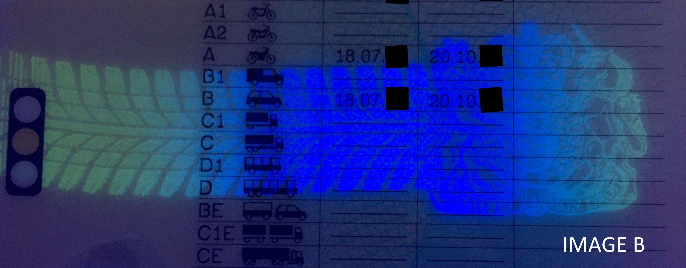
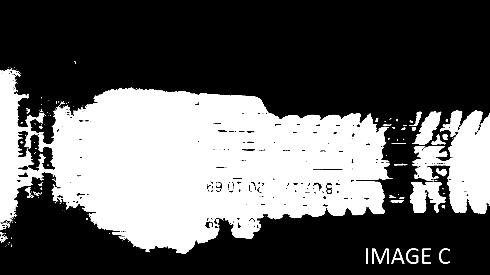
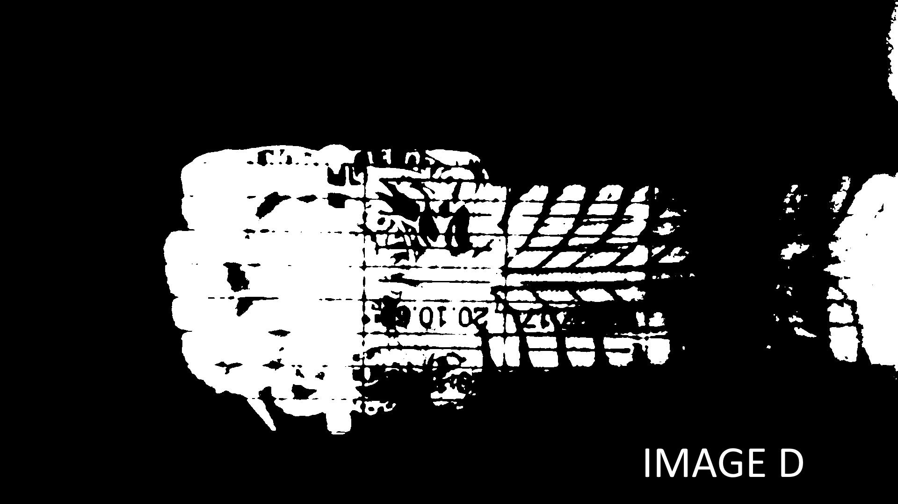
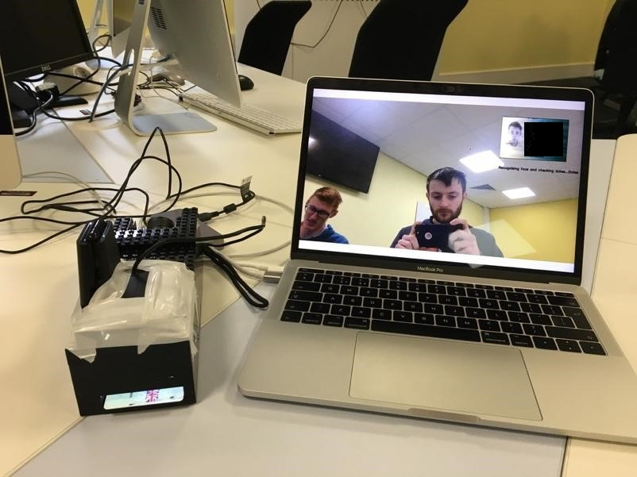
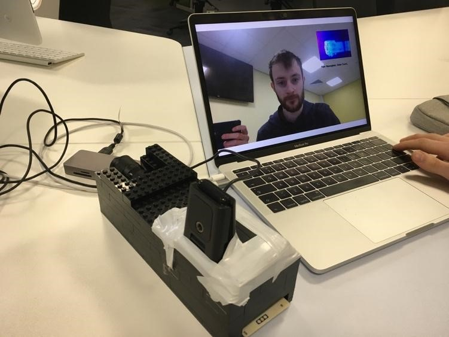
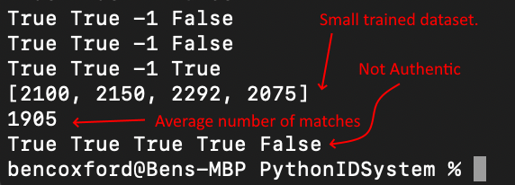
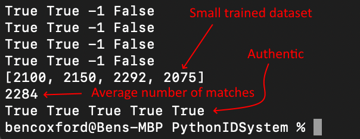
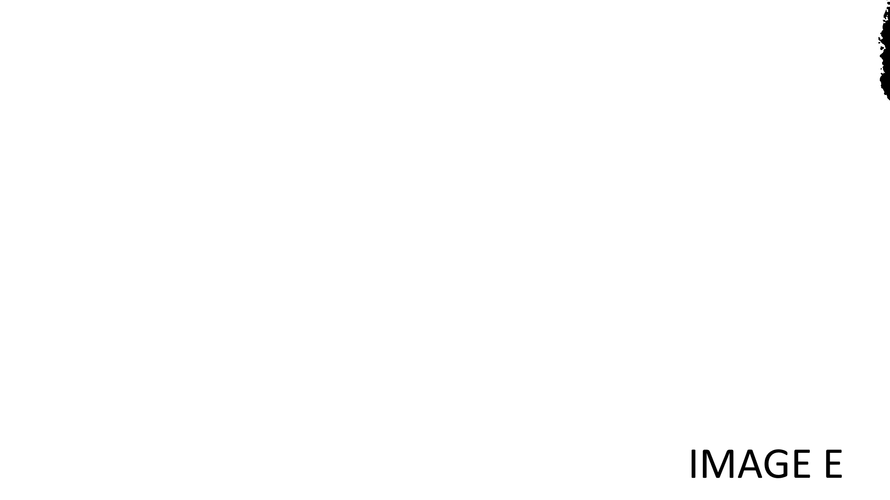

Supermarket Instant ID Checking
Processing ID Cards with Feature Extraction and ML in a Retail Setting
Retailers are always looking for new ways to enhance their customers’ journeys and improve customer retainability. Many retailers are now using advances in technology (especially machine learning) to grow their business.
Supermarkets are something we visit every day and most people choose to serve themselves on a ‘self-scan checkout’ (SCO). At this point, if you have purchased an age-restricted item you would be asked for your ID and most of the time you may have a long wait for a member of staff.
In this article, feature extraction, image processing, and a simple machine learning model will be introduced to automatically verify your age. Not only would this help you, but it would aid staff and reduce human error; however, this would spark the question of who is liable if an age-restricted item were sold to an underaged person.
Problem Definition
Customers buy a range of age-restricted products and the United Kingdom operates a ‘Challenge 25’ policy. If a member of staff believes you look under 25, they ask you for your ID to prove you are old enough to buy the product. The issue with the current solution is judgement. A colleague must judge the looks of an individual and act based on how old they ‘think’ the customer is, allowing for human error.
Disclaimer: The ethics have been considered but are not discussed in the space of research or deployment. This is a university placement project.
The Concept
We looked at three methods of validating the ID card, by matching the customers ID portrait to the customers face, validating the dates, and authenticating the hologram. Below is the initial roadmap of the project, outlining each step generically.
Feature Extraction
As seen in image A, the ID card is a European Driving License, where we can see three dates (issue, expiry, and date of birth), and a photograph; therefore, we can verify the age, dates, and customer. However, there is another important feature we cannot see. A hologram is a security feature which is only visible under ultra-violet light, allowing us to authenticate the ID card under specific conditions (as seen in image B).
Now, you walk up to a checkout with the intent to purchase some Paracetamol. How can a computer verify and validate your ID card whilst making sure it is you?
First using two cameras, the computer would need to take a photo of the customers face and the ID card. The easiest way to do this is to stream a video and analyse each frame. When a single face is detected on both cameras, a snapshot of the frame is stored in two separate locations.
Both frames contain a vast amount of data and the computer must extract the important features. We can use a character reader framework to extract the text (dates) and face recognition framework to extract the faces (face matching). The final step is to take a photo of the ID card under ultraviolet light. Once processed, the image is then applied to a model to determine whether the card is authentic.
Implementation
The following implementation uses MacOS Mojave 10.14.6 with the internal camera and an external Logitech C920 HD Pro Camera. The installation process is different for other Linux-based OS such as Ubuntu, these commands have also been included but have not been tested. The following plan-of-action shows each ‘part’ described in this article and each section required to complete the solution.
- Install Python and all required packages.
- Extracting the dates.
- Detecting and matching two faces.
- Matching features between two binary images.
- Processing the input images.
- Preparing the cameras.
- Implementing design patterns.
- The results.
Part One - Installation
Python is a well-organised and easy to learn language, more importantly it is extremely useful for image processing and machine learning purposes. Initially, the project was attempted using a Raspberry Pi; however, OpenCV, an open-sourced image framework has little support for the credit-card sized computer. It was then decided that a Macbook would be used with an internal and external web camera.
Python
Download the latest Python version from: https://www.python.org/downloads/ (1).
OpenCV
Once you have Python up and running, go ahead to the command line and install OpenCV using the following.
First install Numpy and Matplotlib.
For MacOS:
brew install numpy
pip3 install matplotlib
For other Linux-based operating systems:
pip install numpy
pip install matplotlib
Now install OpenCV.
For MacOS:
brew install opencv --with-contrib
For other Linux-based operating systems:
pip3 install opencv-python
pip3 install opencv-contrib-python
Test the package has been installed successfully.
python3
import cv2
Part Two - Extracting the Dates
PyTesseract allows us to extract text from an image and store it as a string ready for processing. This enables us to read all the text on the ID cards, in preparation for extracting and analysing the dates (4).
import pytesseract
#Read text from the image and store.
pytesseract.pytesseract.tesseract_cmd = '/usr/local/Cellar/tesseract/4.1.1/bin/tesseract'
text = pytesseract.image_to_string(imgID)
Now that we have a long string of text, that could mean anything, we need to analyse and extract the dates. First, we import both the pytesseract and datetime frameworks.
Further into the article, I will provide the full code and explain how design patterns can improve the solution; hence, all classes are subclasses. Next, we program the constructor method to hold two attributes – text and endRead. The array ‘text’ will store the extracted dates, whilst the Boolean ‘endRead’ will indicate if three distinct dates have been extracted.
#Import frameworks
import pytesseract
import datetime
class _DateValidation(object):
#Initialise date verification
def __init__(self):
self.text = [] #Store the dates
self.endRead = False #Have three distinct dates been found?
Following this, we create a method called ‘checkDate’ which will validate that the issue date and expiry date is in date. For now, the date of birth is tested to be earlier than the current date and, in the future, this will be tested against the minimum age-restriction.
def checkDate(self):
#stores current date in date format
currentDate = datetime.date.today()
currentDate = currentDate.strftime("%d.%m.%Y")
#Sets all dates to false
validDOB = False
validIssue = False
validExpiry = False
#sorts the dates in reverse order
sortedDates = sorted(self.text, reverse=True)
#If all dates are valid and in date the variables are changed to true
if (datetime.datetime.strptime(sortedDates[0], "%d.%m.%Y") < datetime.datetime.strptime(currentDate, "%d.%m.%Y")):
validDOB = True
if (datetime.datetime.strptime(sortedDates[1], "%d.%m.%Y") < datetime.datetime.strptime(currentDate, "%d.%m.%Y")):
validIssue = True
if (datetime.datetime.strptime(sortedDates[2], "%d.%m.%Y") > datetime.datetime.strptime(currentDate, "%d.%m.%Y")):
validExpiry = True
#Variables are returned
return validDOB, validIssue, validExpiry
Finally, we create another method called readText to take an image and extract all the text. The character reader framework is not 100% effective each time so the program will effectively repeat the process until three distinct dates are found. Once three dates are found, then the dates are then verified using the checkDate method above.
def readText(self, imgID):
#If three dates have not been found
if self.endRead == False:
#Read the text from the image
pytesseract.pytesseract.tesseract_cmd = '/usr/local/Cellar/tesseract/4.1.1/bin/tesseract'
text = pytesseract.image_to_string(imgID)
#Split the text by spaces
data = text.split()
for i in data:
#For each item in the array
try:
#Attempt to test if it’s in the correct format
datetime.datetime.strptime(i, '%d.%m.%Y')
if(i not in self.text): #If the same date is not in the array
#Split the date and extract its year
x = i.split(".")
date = datetime.datetime.now()
#If the year is within 30 years of the current date
if(int(x[2]) > (int(date.year)-30) and int(x[2]) < (int(date.year)+30)):
#Append it to the array of dates
self.text.append(i)
except:
continue
if(self.text): #If the array is initialised
if(len(self.text) == 3): #If the array length is equal to three
self.endRead = True #Set value to true as all three dates are collected
return self.checkDate() #Return if the date are valid
return False, False, False #Return false if three dates are not found
Part Three - Face Detection
The next step in the process is verifying if the customer is the same person as shown on the ID card. To begin, we must detect a single face on both the customer camera and the ID card camera, followed by comparing the faces. The variable ‘minSize’ determines the pixel length the face must fit for it to be detected and this avoids anyone in the background being detected as well (9).
#Import the frameworks and libraries
import cv2
import matplotlib.pyplot as plt
import numpy as np
import sys
import os, os.path
import face_recognition
class _FaceDetection(object):
#Initialise the face detection object variables
def __init__(self):
self.minSize = 250; #Minimum size in pixels for a face to be detected. (Avoids smaller object being recognised)
self.faceCascade = cv2.CascadeClassifier("haarcascade_frontalface_default.xml")
self.bf = cv2.BFMatcher(cv2.NORM_L1, crossCheck=True)
def compareFaces(self, img1, img2):
try:
#Try to compare and match the faces on the two images
encodedImage0 = face_recognition.face_encodings(img1)[0]
encodedImage1 = face_recognition.face_encodings(img2)[0]
result = face_recognition.compare_faces([encodedImage0], encodedImage1) #Compare the images using the framework
return result[0] #Return the result, either true or false.
except: #If error return -1
return -1
def detectSingleFace(self, img, minSize): #Detect a single face with the image and the minimum size the face must fit.
#Detect a single face and return true or false if so.
face = self.faceCascade.detectMultiScale(img, scaleFactor=1.1, minNeighbors=5,minSize=(minSize, minSize),flags=cv2.CASCADE_SCALE_IMAGE)
numberFace = len(face) #Number of faces
if(numberFace==1):
return True
else:
return False
Part Four - Feature Matching
The feature matching class will take two images and produce the number of matched features between them. Here we are using a Brute-Force Matcher which takes a set of features from one image and finds the best matches to the features from a second image (3).
#Import frameworks and libraries
import cv2
import matplotlib.pyplot as plt
import numpy as np
import sys
import os, os.path
class _FeatureMatching(object):
def __init__(self):
self.matches = 0;
#Match the images and produce a number
def Match(self, img1, img2):
bf = cv2.BFMatcher(cv2.NORM_HAMMING, crossCheck=True)
sift = cv2.xfeatures2d.SIFT_create() #Sift descriptor
#Detect and calculate the matches
kp1, des1 = sift.detectAndCompute(img1,None)
kp2, des2 = sift.detectAndCompute(img2,None)
bf = cv2.BFMatcher() #Brute force method
matches = bf.knnMatch(des1,des2, k=2)
self.matches = len(matches) #Set the number of matches
def getMatch(self): #Return the number of matches
return self.matches
Part Five - Image Processing
For feature matching to be as effective as possible, the images are converted to greyscale, before being converted to a binary image using a threshold algorithm. Here is an example of the results (5). See image C and D.
 The implementation of this is shown below.
import cv2
import matplotlib.pyplot as plt
import numpy as np
import statistics
import sys
import os, os.path
class _ImageProcessing(object):
def __init__(self):
self.lastImg = None;
#Converts the image to its grayscale version and returns the image
def convertToGrayScale(self, img):
img = cv2.cvtColor(img, cv2.COLOR_BGR2GRAY)
self.lastImg = img
return img
#Converts the image to its black and white binary self-using the binary thresholding
def convertToBinary(self, img):
return cv2.threshold(img,60,255,cv2.THRESH_BINARY)
Part Six - Camera Setup
At this point, the solution is coming together; however, we do not have any inputs to the system. As described, we have two cameras and each one needs initialising and adjusting, before we can extract the frames. This class enables for multiple, distinct objects to be instantiated, allowing multiple cameras to be installed. To avoid the frames and process being affected by external light, a camera is installed in a box, made entirely out of Lego.
 Each camera is initialised and the focus is adjusted. This could be improved by enabling the system to automatically focus to improve the performance of the system. Additional methods are added, to allow an image to be read and for the cameras to be closed correctly. Without closing the cameras, the next time you start the system, it will crash.
Note for MacOS users: The operating has security restrictions in place and will cause the program to crash if you run it from IDLE. To do so, run the program from the command line instead.
#Import frameworks and libraries
import cv2
import matplotlib.pyplot as plt
import numpy as np
import statistics
import sys
import os, os.path
class _Camera(object):
def __init__(self, cameraNumber):
#Initialise cameras instance variables
self.camera = None
self.cameraNumber = cameraNumber
self.focus = 80
self.ret = None
self.img = None
def start(self):
#Start the video capture and set the focus of the camera
self.camera = cv2.VideoCapture(self.cameraNumber)
self.camera.set(cv2.CAP_PROP_FOCUS, self.focus)
def adjustFocus(self, focus):
#Adjust the focus of the camera
self.focus = focus
self.camera.set(cv2.CAP_PROP_FOCUS, self.focus)
def readImg(self):
#Read the current frame as an image
self.ret, self.img = self.camera.read()
return self.ret, self.img
def stop(self):
#Stop the and release the camera
self.camera.release()
Part Seven - Design Patterns
To complete this project, we utilised two design patterns. In software engineering, design patterns are a range of solutions to common problems or in other words a generic template or description of how to solve a problem. In this scenario, we have already started using the Façade pattern (7), a single class which operates and represents an entire system. We encapsulate subsystems under one superclass. A challenge for this project was to incorporate design patterns, and this allows programmer and software developers to recognise the systems structure; however, design patterns do not need to be implemented but they are one technique used as a proven solution.
class IDSystem(): #System
def __init__(self):
#Initiate system and subsystems
self.__Camera_1 = Camera._Camera(1)
self.__Camera_2 = Camera._Camera(0)
self.__FaceDetection = FaceDetection._FaceDetection()
self.__FeatureMatching = FeatureMatching._FeatureMatching()
self.__ImageProcessing = ImageProcessing._ImageProcessing()
self.__DateValidation = DateValidation._DateValidation()
self.__ImagePool = ImagePool._ImagePool()
#Pipeline passes
self.passA = -1
self.passB = -1
self.passC = -1
#Indicator when button pressed
self.turnt = False
#Date boolean checks
self.ValidDOB = False
self.ValidIssue = False
self.ValidExpiry = False
#ID Verification check
self.ImagePass = False
#Start the system
def startSystem(self):
cv2.namedWindow("preview", cv2.WINDOW_NORMAL) #Create a new window named preview
cv2.setWindowProperty('preview', cv2.WND_PROP_FULLSCREEN, cv2.WINDOW_FULLSCREEN) #Set to fullscreen
self.__Camera_1.start() #Initialise camera 1
self.__Camera_2.start() #Initialise camera 2
Part Eight - Results
After showing my ID and my face to the system, it successfully matched my face and extracted three valid dates. The two photos below show myself using the system with my own driving license.


The results produce five true values and this means that the system has matched the faces, detected and validate the ID’s, and verified the ID cards hologram. What is also shown is the small dataset of the pre-trained dataset and below it the average number of matches from the image.
 However, I tried to trick the system using my driving license to verify the dates and that I was the licenses owner. I then swapped the driving license for my university ID (does not have the hologram) and tested the results.
This method is not 100% effective and with a small dataset the outcomes may vary. The most promising method to validate the hologram is using the Structured Similarity Index function and the Mean Squared Error function. Read further into the ‘What comes next?’ section to find out more. Below is two video demonstrations of the first prototype.
For the full solution, you can clone the source code from GitHub here:
cd ProjectLocation
git clone https://github.com/IIEliteIISquady/AutoID.git
What comes next?
There is the first prototype, it contains a vast amount of feature extraction elements; however, there is little to the machine learning element. So how can we take the project further and improves its efficiency?
Before, I mentioned two functions – Mean Squared Error (MSE) and Structured Similarity Index (SSIM) functions (10). MSE can be used to measure the quality of an image and difference between each pixel value of two images; hence, we can use the function to compare images. SSIM also can be used to measure the quality of an image but in this case, it measures the similarities between pixels. As a result, we can achieve two values for comparing both images and apply them to a logistic regression model (11) to classify and predict whether the ID card is valid or not.
Below we have two images, image C (input) and image D (from dataset). Our goal is to determine whether image C is authentic (1) or not (0) and we do this using image D and binary logistic regression. Running the code above with image C and image D, we get 1 as the output, meaning the ID is authentic.
Testing with a different input, image E, we get a different result 0, meaning the ID is not authentic. The following code will compare the image using both MSE and SSIM to determine the similarities and differences in the quality of the image. Following this, we train the model using the supervised dataset ‘xCompared’ in the format [MSE Value, SSIM Value] and the respective result in yAuthentic (1 = Authentic, 0 = Fake). Finally, we can predict the outcome of the input image using the calculated MSE and SSIM values using the model. To start, download the relevant packages sci-image and sci-learn.
pip3 install scikit-learn
pip3 install scikit-image
Next, create a new Python file and import the relevant packages.
from skimage.metrics import structural_similarity as ssim
from skimage.metrics import mean_squared_error as mse
from skimage.color import rgb2gray
import cv2
from sklearn.linear_model import LogisticRegression as lr
from sklearn.metrics import accuracy_score as aScore
import numpy as np
Create a function to compare the images using both MSE and SSIM and return the values.
imageA = cv2.imread("images/img_1.png")
imageB = cv2.imread("images/img_3.png")
imageC = cv2.imread("images/img_9.png")
imageA = rgb2gray(imageA)
imageB = rgb2gray(imageB
Compare your chosen images. A and B will produce a result of 1 whilst A and C will produce a result of 0.
m, s = compare_image(imageA, imageB)
Load the training data. This is a small example for demonstration.
xCompared = np.array([[0, 100], [22,70], [22,69], [20,76], [80,15], [75, 20], [60, 30]])
yAuthentic = np.array([1, 1, 1, 1, 0, 0, 0])
Create the model using the training data.
model = lr(random_state=0).fit(xCompared, yAuthentic)
Finally, predict the result from the two comparisons. Both variables ‘m’ and ‘s’ are decimals and can be converted to a suitable format for the model by multiplying them by 100.
print(model.predict([[m*100, s*100]])[0])
The method is efficient when classifying the holograms as authentic or fake and is overall has improved accuracy over the previous method. Convolution Neural Networks (CNNs), is another powerful, unsupervised method which could classify the holograms; however, this would require a large dataset to be effective and perform at a slower pace than MSE and SSIM due to computational powered required to run. The benefit of this method would be the model’s accuracy identifying the hologram (12).
Acknowledgements
I wish to acknowledge the contributions provided by Joel Guest and the assistance from Jack Templeman.
References
- Cambridgeshire Council. Age restricted products [Internet]. Available from https://www.cambridgeshire.gov.uk/business/trading-standards/age-restricted-products [Accessed 13th January 2020].
- Home Office. False ID Guidance [Internet]. Available from https://www.pass-scheme.org.uk/wp-content/uploads/2014/06/Home-Office_false-id-guidance_July-2012.pdf [Accessed 29th November 2020].
- OpenCV. Feature Matching [Internet]. Available from https://docs.opencv.org/master/dc/dc3/tutorial_py_matcher.html [Accessed 13th January 2020].
- Adrian Rosebrock. OpenCV OCR and text recognition with Tesseract [Internet]. Available from https://www.pyimagesearch.com/2018/09/17/opencv-ocr-and-text-recognition-with-tesseract/ [Accessed 13th January 2020].
- OpenCV. Image Thresholding [Internet]. Available from https://docs.opencv.org/3.4/d7/d4d/tutorial_py_thresholding.html [Accessed 13th January 2020].
- SourceMaking. Object Pool Design Pattern [Internet]. Available from https://sourcemaking.com/design_patterns/object_pool [Accessed 13th January 2020].
- SourceMaking. Façade Design Pattern [Internet]. Available from https://sourcemaking.com/design_patterns/facade [Accessed 10th January 2020].
- Python. Download the latest version of Python [Internet]. Available from https://www.python.org/downloads/ [Accessed 1st May 2020].
- Ageitgey. Face Recognition [Internet]. Available from https://github.com/ageitgey/face_recognition [Accessed 14th January 2020].
- Mamun, I. Image Classification using SSIM [Internet]. Available from https://towardsdatascience.com/image-classification-using-ssim-34e549ec6e12 [Accessed 13th may 2020].
- scikit-learn developers. LogisticRegression [Internet]. Available from https://scikit-learn.org/stable/modules/generated/sklearn.linear_model.LogisticRegression.html [Accessed 15th May 2020].
- Saha, S. A Comprehensive Guide to Convolutional Neural Networks – the ELI5 way [Internet]. Available from https://towardsdatascience.com/a-comprehensive-guide-to-convolutional-neural-networks-the-eli5-way-3bd2b1164a53 [Accessed 21st May 2020].